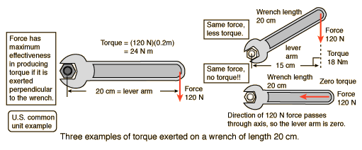
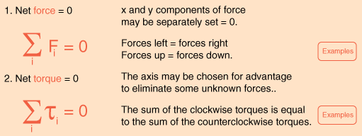

TorqueA torque is an influence which tends to change the rotational motion of an object. One way to quantify a torque is Torque = Force applied x lever armThe lever arm is defined as the perpendicular distance from the axis of rotation to the line of action of the force. 
|
Index Rotation concepts Torque concepts | ||||
|
Go Back |
Conditions for EquilibriumAn object at equilibrium has no net influences to cause it to move, either in translation (linear motion) or rotation. The basic conditions for equilibrium are: The conditions for equilibrium are basic to the design of any load-bearing structure such as a bridge or a building since such structures must be able to maintain equilibrium under load. They are also important for the study of machines, since one must first establish equilibrium and then apply extra force or torque to produce the desired movement of the machine. The conditions of equilibrium are used to analyze the "simple machines" which are the building blocks for more complex machines. |
Index | ||
|
Go Back |
TorqueA torque is an influence which tends to change the rotational motion of an object. One way to quantify a torque is Torque = Force applied x lever armThe lever arm is defined as the perpendicular distance from the axis of rotation to the line of action of the force. |
Index Rotation concepts Torque concepts | ||
|
Go Back |